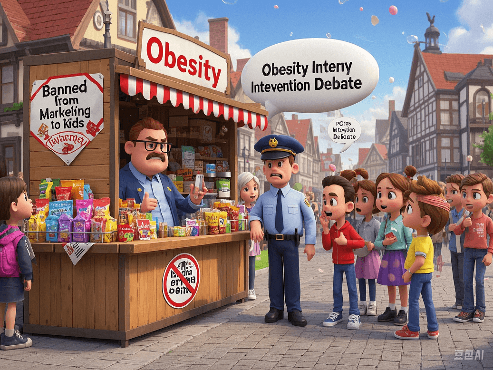

Controversy over Childhood Obesity Intervention: Denmark Bans Marketing of High - Sugar Foods to Children
PeaceLove.Top Insights :2025-04-12
The issue of childhood obesity is becoming increasingly severe globally, especially in developed countries. Obesity not only affects children's physical health but also leads to psychological problems such as low self - esteem, anxiety, and depression. This problem has attracted wide attention, and many countries are exploring ways to effectively address childhood obesity. Recently, Denmark took a controversial measure - legislating to ban the marketing of high - sugar foods to children.
⚖️ Denmark's new law: Banning the marketing of high - sugar foods
In 2025, the Danish government passed a landmark legislation aimed at restricting the marketing of high - sugar and junk foods to children. According to the bill, any high - sugar food merchants are prohibited from promoting their products to children through TV advertisements, social media, and any other forms. This measure directly targets snacks, beverages, and fast foods with extremely high sugar content, especially those brands commonly seen on children's entertainment and social platforms.
👩⚖️ Legislative background:- The problem of childhood obesity is becoming increasingly serious: Data shows that approximately 38% of children and adolescents globally are overweight or obese. According to a report from the World Health Organization (WHO), obese children are more likely to become obese adults, leading to a series of health problems such as type 2 diabetes, high blood pressure, and cardiovascular diseases.
- The impact of high - sugar food marketing: Many studies have shown that advertising has a significant impact on children's food choices, especially in the case of advertisements for high - sugar foods. Children's brains are not fully developed and are easily influenced by advertisements, leading to a preference for high - sugar foods, which further promotes the spread of obesity.
🧐 Controversy and opposing voices:
Although this legislation is seen by some as a positive measure to protect children's health, it has also sparked intense controversy.
🚫 Opponents' views:- Violation of market freedom: Opponents believe that this intervention measure is too strict and restricts the right of food and advertising companies to freely market their products.
- Weakening of parental responsibility: Some critics argue that parents are the ultimate decision - makers of their children's eating habits, not the advertisements of merchants. Over - restricting advertising through legislation may overlook the importance of family education.
- Economic impact: This law may cause certain economic losses to the food industry, advertisers, and retailers, especially in the children's market.
✅ Supporters' views:- Protecting children's health: Supporters believe that children are in a crucial stage of growth and development, and their eating habits at this time will affect them for life. Banning the marketing of high - sugar foods can effectively reduce sugar intake and lower the childhood obesity rate.
- Reducing psychological burden: Excessive food advertising may trigger children's excessive desire for food, which in turn brings mental health problems. This legislation can effectively relieve children's 'food anxiety'.
- Promoting social responsibility: This law is also a moral constraint on merchants, prompting them to pay more attention to the healthiness of their products and their impact on children.
🏥 Harms of childhood obesity:1. Health problems:- Type 2 diabetes: Childhood obesity is a major risk factor for type 2 diabetes. Obese children are more likely to develop diabetes.
- Cardiovascular diseases: Excessive intake of sugar and fat may lead to arteriosclerosis and high blood pressure, thereby increasing the risk of heart disease.
- Bone and joint problems: Excess weight puts additional pressure on children's bones and joints, which may lead to joint problems.
2. Psychological problems:- Low self - esteem: Childhood obesity may lead to social isolation, which in turn causes low self - esteem and even depression.
- Anxiety and depression: Weight problems may make children feel anxious, which affects their mental health in the long run.
🌍 Global reaction:
- Protecting children's health: Supporters believe that children are in a crucial stage of growth and development, and their eating habits at this time will affect them for life. Banning the marketing of high - sugar foods can effectively reduce sugar intake and lower the childhood obesity rate.
- Reducing psychological burden: Excessive food advertising may trigger children's excessive desire for food, which in turn brings mental health problems. This legislation can effectively relieve children's 'food anxiety'.
- Promoting social responsibility: This law is also a moral constraint on merchants, prompting them to pay more attention to the healthiness of their products and their impact on children.
🏥 Harms of childhood obesity:1. Health problems:- Type 2 diabetes: Childhood obesity is a major risk factor for type 2 diabetes. Obese children are more likely to develop diabetes.
- Cardiovascular diseases: Excessive intake of sugar and fat may lead to arteriosclerosis and high blood pressure, thereby increasing the risk of heart disease.
- Bone and joint problems: Excess weight puts additional pressure on children's bones and joints, which may lead to joint problems.
2. Psychological problems:- Low self - esteem: Childhood obesity may lead to social isolation, which in turn causes low self - esteem and even depression.
- Anxiety and depression: Weight problems may make children feel anxious, which affects their mental health in the long run.
🌍 Global reaction:
- Type 2 diabetes: Childhood obesity is a major risk factor for type 2 diabetes. Obese children are more likely to develop diabetes.
- Cardiovascular diseases: Excessive intake of sugar and fat may lead to arteriosclerosis and high blood pressure, thereby increasing the risk of heart disease.
- Bone and joint problems: Excess weight puts additional pressure on children's bones and joints, which may lead to joint problems.
2. Psychological problems:- Low self - esteem: Childhood obesity may lead to social isolation, which in turn causes low self - esteem and even depression.
- Anxiety and depression: Weight problems may make children feel anxious, which affects their mental health in the long run.
🌍 Global reaction:
The implementation of this policy in Denmark has attracted the attention of other countries. Some countries, such as the UK and the US, are also discussing similar regulations but are facing strong opposition from the food industry and advertisers. Meanwhile, the WHO and many children's health organizations have expressed their support, believing that this policy is one of the effective means to intervene in childhood obesity.
🧑👧👦 The role of parents and education:
Although the law can restrict the behavior of merchants, the fundamental issue of children's health still lies in family education. Parents' dietary concepts and choices of healthy foods will directly affect their children's eating habits. By educating and encouraging children to engage in outdoor activities and choose healthy foods, parents can better help their children stay away from the trouble of obesity in daily life.
Conclusion:
Denmark's legislation, although controversial, has undoubtedly taken an important step in solving the problem of childhood obesity. The advertising of high - sugar foods may be an important factor contributing to childhood obesity, and taking legislative measures to regulate it is a positive attempt. However, the joint efforts of families, schools, and society are the foundation for preventing childhood obesity. Finding a balance between protecting children's health and protecting market freedom is a challenge that future law - makers need to face.